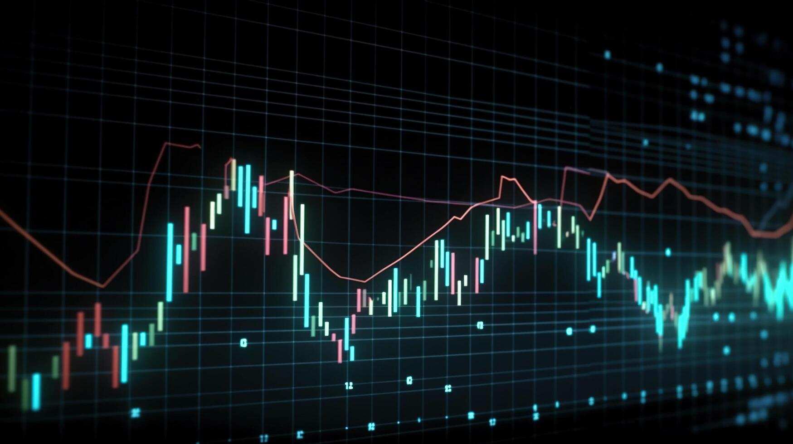

Welcome To My Website

Stock Market Graph
Quantitative Finance
Despite being one of today's most important fields, many people are unaware of the responsibilities of quantitative developers. A quantitative developer, or 'quant dev,' is a specialized role in the financial industry concerned with developing applications using quantitative models. The translation of quantitative models into applications requires frequent communication with quantitative researchers who develop the models to properly translate their research into optimized code.
One of my key interests is quantitative development as it combines my two areas of expertise, computer science and finance. Instead of simply being a finance job that benefits from coding ability, or a software engineering job that benefits from knowing a bit of financial theory, quantitative development requires equal amounts of knowledge in both fields.
The development of quantitative models and applications also requires industry-specific knowledge including mathematics, statistics, financial theory, and algorithms. Due to the high speed and uncertainty of financial markets, optimizing applications for speed and efficiency is paramount to a quant dev. These professions are crucial in maintaining modern high-frequency trading markets, derivative pricing, and risk management services that many large banks offer. As a new field in a more traditional industry, quantitative development still has immense potential for growth as larger swathes of the economy become digitized.